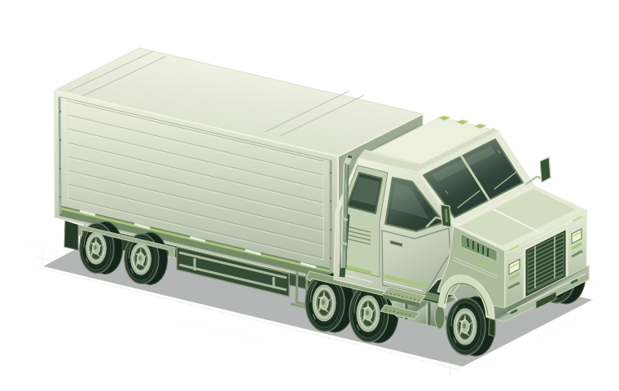

NOM-045-SEMARNAT-2017
Dictamen de baja emisión
Medición de la opacidad del humo en unidades a diésel para evaluar el cumplimiento de los límites de emisión establecidos por la norma.
Autotransporte federal de carga
Baja emisión y verificación físico-mecánica para camiones y tractocamiones en Jesús María, Aguascalientes.
Atención directa. Resuelve tus dudas antes de venir.

Camiones y
tractocamiones.
01 / Nuestros servicios
La atención que tu unidad necesita, con procedimientos documentados y equipo calibrado en nuestras instalaciones de Jesús María.
NOM-045-SEMARNAT-2017
Medición de la opacidad del humo en unidades a diésel para evaluar el cumplimiento de los límites de emisión establecidos por la norma.
NOM-068-SCT-2-2014
Revisión de las condiciones físico-mecánicas y de seguridad que tu unidad debe cumplir para circular en caminos y puentes de jurisdicción federal.
02 / Un proceso claro
Conoce qué esperar en tu visita. El primer paso es resolver tus dudas con nosotros.
Escríbenos por WhatsApp. Consulta el servicio, los requisitos y la disponibilidad antes de venir.
Recibimos la unidad y revisamos la documentación necesaria para el servicio.
Se realiza conforme a los procedimientos documentados y a la normatividad que aplica a cada dictamen.
Se emite el dictamen correspondiente al servicio realizado.
Cuéntanos qué unidad tienes y te orientamos sobre la documentación necesaria.
Independencia y confianza
La confianza se construye con inspecciones imparciales.
03 / Respaldo normativo
Cada inspección se realiza conforme a la legislación y los lineamientos técnicos vigentes que nos aplican.
En Prueba Ambiental del Centro S.R.L. de C.V., nuestros procesos de inspección se desarrollan bajo procedimientos documentados que garantizan la objetividad, imparcialidad y confiabilidad de cada evaluación realizada. Trabajamos con estricto apego a la normatividad vigente para asegurar que cada inspección se lleve a cabo con transparencia, precisión y los más altos estándares de calidad.
La independencia de nuestros inspectores es un principio fundamental de nuestra organización. Todo el personal de la Unidad de Inspección desempeña sus funciones libre de cualquier presión comercial, financiera o de cualquier otra índole que pudiera influir en su criterio técnico o afectar los resultados de una inspección. Este compromiso nos permite ofrecer servicios imparciales, confiables y respaldados por un sólido Sistema de Gestión de la Calidad.
Nuestros métodos y procedimientos aplican a todo el personal involucrado en las actividades de la Unidad de Inspección, asegurando una actuación uniforme, consistente y alineada con los estándares de calidad establecidos por la empresa.
Todos nuestros procesos de inspección se realizan conforme a la legislación y los lineamientos técnicos vigentes, entre ellos:
El cumplimiento de este marco normativo garantiza que cada inspección se realice con criterios técnicos sólidos, consistentes y reconocidos oficialmente.
Gerente Técnico. Es responsable de implementar, supervisar y verificar el cumplimiento de los procedimientos de inspección, asegurando que todo el personal los aplique correctamente en cada servicio realizado.
Coordinador del Sistema de Gestión de la Calidad. Tiene la responsabilidad de revisar y actualizar los procedimientos cuando sea necesario, ya sea por mejoras internas del sistema, cambios en la normatividad o nuevos requerimientos de la Unidad de Inspección. Este proceso de mejora continua nos permite mantener nuestros servicios actualizados y en cumplimiento permanente con las disposiciones aplicables.
La calidad de nuestras inspecciones se sustenta en procedimientos claramente definidos, personal técnicamente competente y un compromiso permanente con la imparcialidad. Cada proceso es ejecutado bajo estándares que garantizan resultados confiables, transparentes y acordes con los requisitos legales y técnicos aplicables.
04 / Antes de venir
La información que necesitas para dar el siguiente paso.
¿Otra pregunta? EscríbenosAtendemos camiones, tractocamiones y unidades de autotransporte federal de carga.
Dictamen de baja emisión y dictamen de condición físico-mecánica. Los dos se realizan en la misma unidad, en Jesús María.
Bajo la NMX-EC-17020-IMNC-2014, la NOM-045-SEMARNAT-2017, la NOM-167-SEMARNAT-2017 y la NOM-068-SCT-2-2014, además de la aprobación de la SCT para las materias de EC y AT.
En Av. Independencia 604, Col. Paso Blanco, C.P. 20924, Jesús María, Aguascalientes. Puedes ver el mapa y trazar la ruta.
Por WhatsApp al 449 110 0153. Mándanos los datos de tu unidad y el servicio que necesitas.
Consulta el costo según tu unidad y el dictamen que necesitas. Solicita tu cotización por WhatsApp.
Te recomendamos consultar la disponibilidad por WhatsApp antes de venir. Así podemos orientarte para tu visita.
05 / Aquí te esperamos
Encuentra nuestra unidad en Paso Blanco, Aguascalientes. Traza tu ruta y consulta con nosotros antes de salir.
Dirección
Av. Independencia N.º 604, Col. Paso Blanco
C.P. 20924, Jesús María, Aguascalientes
Horario
Lunes a sábado · 9:00 a 18:00 h
Domingo · Cerrado
Teléfono y WhatsApp
Hablemos de tu unidad
Lunes a sábado · 9:00 a 18:00 h